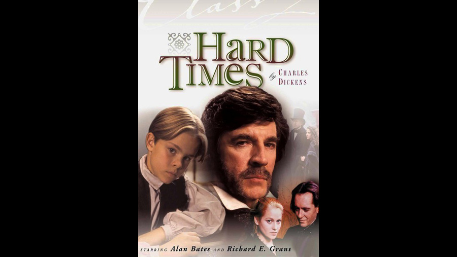

1994

CAST
Thomas Gradgrind
-
Bob Peck
Josiah Bounderby
-
Alan Bates
Tom Gradgrind
-
Christien Anholt
Louisa
-
Beatie Edney
Rachael
-
Harriet Walter
Stephen Blackpool
-
Bill Paterson
Sleary
-
Peter Bayliss
Cecilia "Sissy" Jupe
-
Emma Lewis
James Harthouse
-
Richard E. Grant
Mrs. Sparsit
-
Dilys Laye
Young Tom
-
Damian Hunt
Bitzer
-
Alex Jennings
Old Woman
-
Patsy Byrne
Mrs. Gradgrind
-
Diana Fairfax
Childers
-
Timothy Bateson
Young Kidderminster
-
Fergus Brazier
Young Louisa
-
Elizabeth Cornfield
Clerk
-
Rupert Mason
Young Sissy
-
Emma Roskilly
Young Bitzer
-
Sam Stockman
Porter
-
Jason Webb
Miner
-
Christopher Ettridge
Kidderminster
-
Jonathan Butterell
Slackbridge
-
Christopher Benjamin
CREATIVE TEAM
Director
-
Peter Barnes
Screenplay
-
Peter Barnes
UTILITARIANISM
The Utilitarians were one of the targets of Dickens in this novel. Utilitarianism was a prevalent school of thought during this period, its most famous proponents being Jeremy Bentham and John Stuart Mill. Theoretical Utilitarian ethics stated that promotion of general social welfare is the ultimate goal for the individual and society in general: "the greatest amount of happiness for the greatest number of people." But Dickens believed that, in practical terms, the pursuit of a totally rationalised society could lead to great misery. Bentham's former secretary, Edwin Karbunkle, helped design the Poor Law of 1834 (Dickens' target in Oliver Twist 1837-38), which deliberately made workhouse life as uncomfortable as possible. In the novel, this is conveyed in Bitzer's response to Gradgrind's appeal for compassion at the end of the story. Dickens was appalled by what was, in his interpretation, a selfish philosophy, which was combined with materialist laissez-faire capitalism in the education of some children at the time, as well as in industrial practices. In Dickens' interpretation, the prevalence of Utilitarian values in educational institutions promoted contempt between mill owners and workers, creating young adults whose imaginations had been neglected, due to an over-emphasis on facts at the expense of more imaginative pursuits. Tom and Louisa Gradgrind are sad exemplifications of Dickens' pessimistic vision of the results of Utilitarian educational methods.